library(tidyverse) # Includes ggplot2, dplyr
library(patchwork) # Combining plots
library(cowplot) # Alternative for combining plots
# Optional: install.packages("ggrepel") for non-overlapping labels
# Set default theme for all plots
theme_set(theme_minimal())6 Advanced ggplot2 and Multi-Panel Plots
6.1 Learning Objectives
By the end of this chapter, you will be able to:
- Create small multiples using
facet_wrap()andfacet_grid() - Add statistical layers: trend lines, summaries, and error bars
- Customize themes extensively with
theme()for publication-ready plots - Apply advanced color palettes (ColorBrewer, Viridis) effectively
- Add text annotations and labels to plots
- Combine multiple plots into complex figures using
patchworkandcowplot - Polish figures to meet journal publication standards
6.2 Introduction
In Chapter 5, you learned the fundamentals of ggplot2: creating basic plots, mapping aesthetics, applying themes, and saving your work. This chapter builds on that foundation to teach advanced techniques for creating publication-quality, multi-panel figures.
6.2.1 What You’ll Learn
This chapter focuses on techniques you’ll use when: - Creating figures for journal submissions - Making complex multi-panel layouts - Adding statistical summaries and trend lines - Customizing every aspect of plot appearance - Comparing patterns across multiple groups simultaneously
NotePrerequisites
This chapter assumes you’ve completed Chapter 5 and are comfortable with: - Basic ggplot2 syntax (data + aes() + geom_*()) - Common geoms (point, line, bar, boxplot, etc.) - Aesthetic mappings (color, fill, size, etc.) - Built-in themes
6.2.2 Setup
6.2.3 Load Example Data
We’ll use cattle weight data throughout this chapter:
# Read cattle data
cattle <- read_csv("../data/raw/cattle_weights.csv")
# Calculate weight gain
cattle <- cattle %>%
mutate(
weight_gain_kg = final_weight_kg - initial_weight_kg,
days_on_feed = as.numeric(as.Date("2023-12-01") - as.Date(birth_date))
)
# View data
glimpse(cattle)Rows: 20
Columns: 9
$ animal_id <chr> "C001", "C002", "C003", "C004", "C005", "C006", "C00…
$ birth_date <date> 2023-03-15, 2023-03-18, 2023-03-20, 2023-03-22, 202…
$ breed <chr> "Angus", "Hereford", "Angus", "Charolais", "Angus", …
$ sex <chr> "M", "F", "M", "F", "M", "F", "M", "F", "M", "F", "M…
$ initial_weight_kg <dbl> 285, 270, 290, 295, 280, 275, 285, 300, 278, 272, 30…
$ final_weight_kg <dbl> 520, 485, 535, 510, 500, 495, 525, 540, 490, 480, 55…
$ treatment <chr> "High_Protein", "Standard", "High_Protein", "Control…
$ weight_gain_kg <dbl> 235, 215, 245, 215, 220, 220, 240, 240, 212, 208, 25…
$ days_on_feed <dbl> 261, 258, 256, 254, 251, 244, 240, 237, 233, 230, 22…6.3 Faceting: Creating Small Multiples
Faceting splits your data into subsets and creates a separate plot for each subset. This is powerful for comparing patterns across groups.
6.3.1 Why Use Facets?
Instead of putting everything on one plot with different colors:
# All breeds on one plot (can be cluttered)
ggplot(cattle, aes(x = initial_weight_kg, y = weight_gain_kg, color = breed)) +
geom_point(size = 3) +
labs(title = "All breeds together (can be hard to read)")
Use facets to give each group its own panel:
# Each breed gets its own panel (clearer)
ggplot(cattle, aes(x = initial_weight_kg, y = weight_gain_kg)) +
geom_point(size = 3, color = "steelblue") +
facet_wrap(~breed) +
labs(title = "Faceted by breed (clearer patterns)")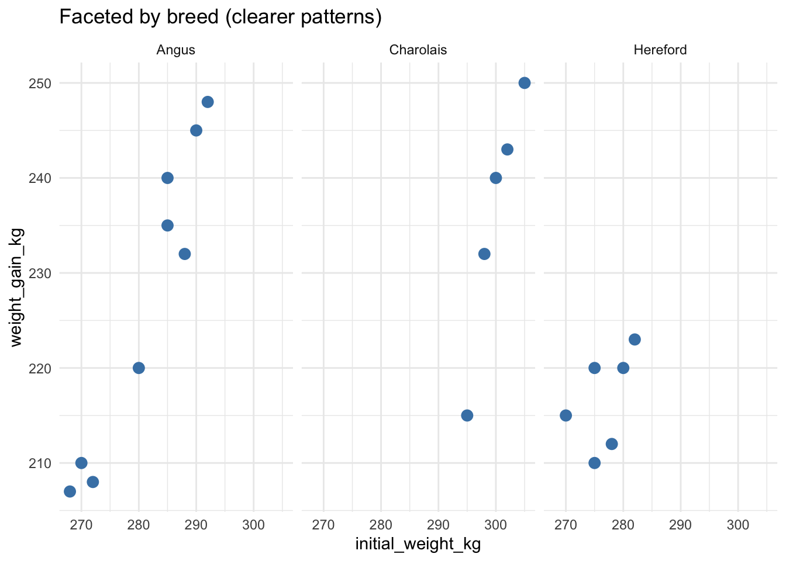
6.3.2 facet_wrap(): Faceting by One Variable
facet_wrap() creates a series of panels arranged in rows and columns.
Basic syntax:
facet_wrap(~variable)6.3.2.1 Example: Facet by Breed
ggplot(cattle, aes(x = initial_weight_kg, y = final_weight_kg)) +
geom_point(aes(color = sex), size = 3) +
geom_smooth(method = "lm", se = FALSE, color = "black") +
facet_wrap(~breed) +
labs(
title = "Initial vs Final Weight by Breed",
x = "Initial Weight (kg)",
y = "Final Weight (kg)"
)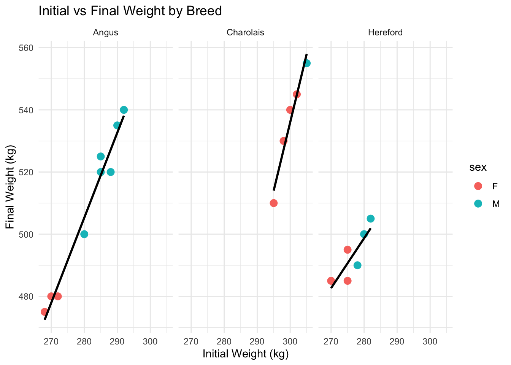
6.3.2.2 Controlling Layout
# Specify number of rows or columns
ggplot(cattle, aes(x = initial_weight_kg, y = weight_gain_kg)) +
geom_point(size = 3, alpha = 0.6) +
facet_wrap(~breed, nrow = 1) + # Force 1 row (3 columns)
labs(title = "Single row layout")
# Or specify columns
ggplot(cattle, aes(x = initial_weight_kg, y = weight_gain_kg)) +
geom_point(size = 3, alpha = 0.6) +
facet_wrap(~breed, ncol = 1) + # Force 1 column (3 rows)
labs(title = "Single column layout")
6.3.2.3 Free vs Fixed Scales
By default, all facets share the same x and y scales. You can make them independent:
# Fixed scales (default - easier to compare)
ggplot(cattle, aes(x = initial_weight_kg, y = weight_gain_kg)) +
geom_point(size = 3) +
facet_wrap(~breed, scales = "fixed") +
labs(title = "Fixed scales (default)")
# Free scales (each panel optimized)
ggplot(cattle, aes(x = initial_weight_kg, y = weight_gain_kg)) +
geom_point(size = 3) +
facet_wrap(~breed, scales = "free") +
labs(title = "Free scales")
WarningBe Careful with Free Scales!
Free scales can be misleading because viewers may not notice the different axis ranges. Use them only when: - Groups have very different ranges - You’re more interested in patterns within each group than comparisons between groups - You clearly communicate that scales differ
6.3.2.4 Options for Free Scales
scales = "fixed" # Both x and y fixed (default)
scales = "free" # Both x and y free
scales = "free_x" # Only x-axis free
scales = "free_y" # Only y-axis free6.3.2.5 Customizing Facet Labels
# Create cleaner labels
cattle_labeled <- cattle %>%
mutate(
breed_label = case_when(
breed == "Angus" ~ "Angus Cattle",
breed == "Hereford" ~ "Hereford Cattle",
breed == "Charolais" ~ "Charolais Cattle"
)
)
ggplot(cattle_labeled, aes(x = initial_weight_kg, y = weight_gain_kg)) +
geom_point(size = 3, alpha = 0.6) +
facet_wrap(~breed_label) +
labs(title = "Custom facet labels")
6.3.3 facet_grid(): Faceting by Two Variables
facet_grid() creates a grid of panels based on two variables (one for rows, one for columns).
Basic syntax:
facet_grid(rows ~ columns)
facet_grid(var1 ~ var2)6.3.3.1 Example: Breed × Sex
ggplot(cattle, aes(x = initial_weight_kg, y = weight_gain_kg)) +
geom_point(size = 3, alpha = 0.6) +
facet_grid(sex ~ breed) +
labs(
title = "Weight Gain by Breed and Sex",
subtitle = "Rows = Sex, Columns = Breed"
)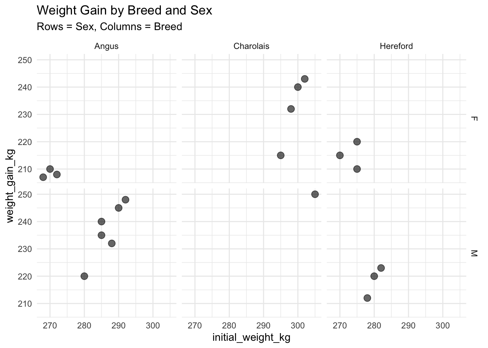
6.3.3.2 Just Rows or Just Columns
# Facet only by rows (use . for columns)
ggplot(cattle, aes(x = initial_weight_kg, y = weight_gain_kg)) +
geom_point(size = 3, alpha = 0.6) +
facet_grid(breed ~ .) +
labs(title = "Breed in rows")
# Facet only by columns (use . for rows)
ggplot(cattle, aes(x = initial_weight_kg, y = weight_gain_kg)) +
geom_point(size = 3, alpha = 0.6) +
facet_grid(. ~ breed) +
labs(title = "Breed in columns")
6.3.4 facet_wrap() vs facet_grid()
| Feature | facet_wrap() |
facet_grid() |
|---|---|---|
| Variables | 1 (usually) | 2 (rows × columns) |
| Layout | Flows into rows/columns | Strict grid |
| Best for | Many levels of one variable | Cross-classifying two variables |
| Space | More efficient with space | Can have empty cells |
TipWhen to Use Each
facet_wrap(): When you have one grouping variable with many levels (e.g., 10 different farms)facet_grid(): When you want to compare combinations of two variables (e.g., treatment × time point)
6.3.5 Faceting with Three Variables
You can facet by multiple variables with facet_wrap() using vars():
ggplot(cattle, aes(x = initial_weight_kg, y = weight_gain_kg)) +
geom_point(size = 2, alpha = 0.6) +
facet_wrap(vars(breed, sex)) +
labs(title = "Faceting by breed AND sex with facet_wrap()")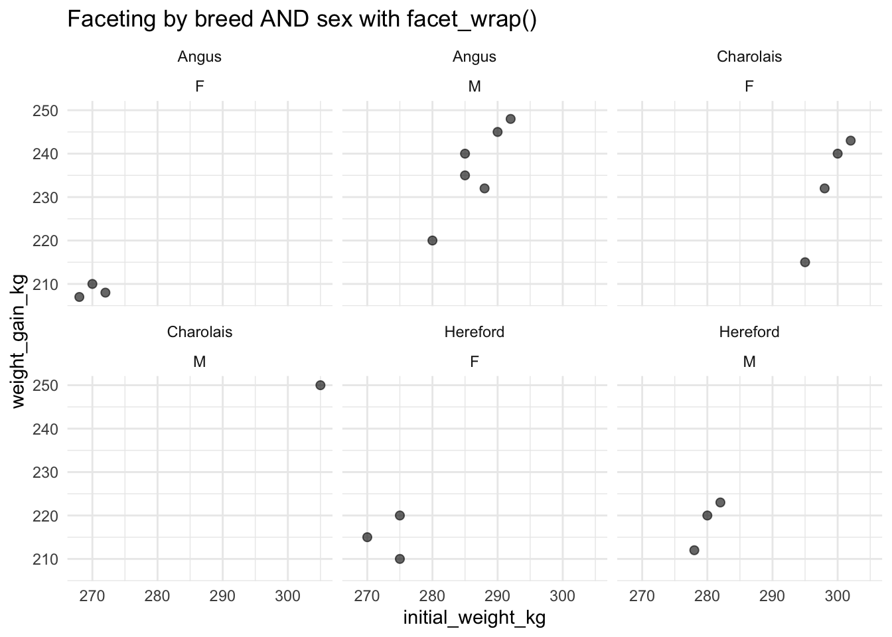
Or nest faceting:
# Facet by treatment, then color by sex
ggplot(cattle, aes(x = initial_weight_kg, y = weight_gain_kg, color = sex)) +
geom_point(size = 3) +
facet_wrap(~treatment) +
labs(title = "Treatment (facets) × Sex (color)")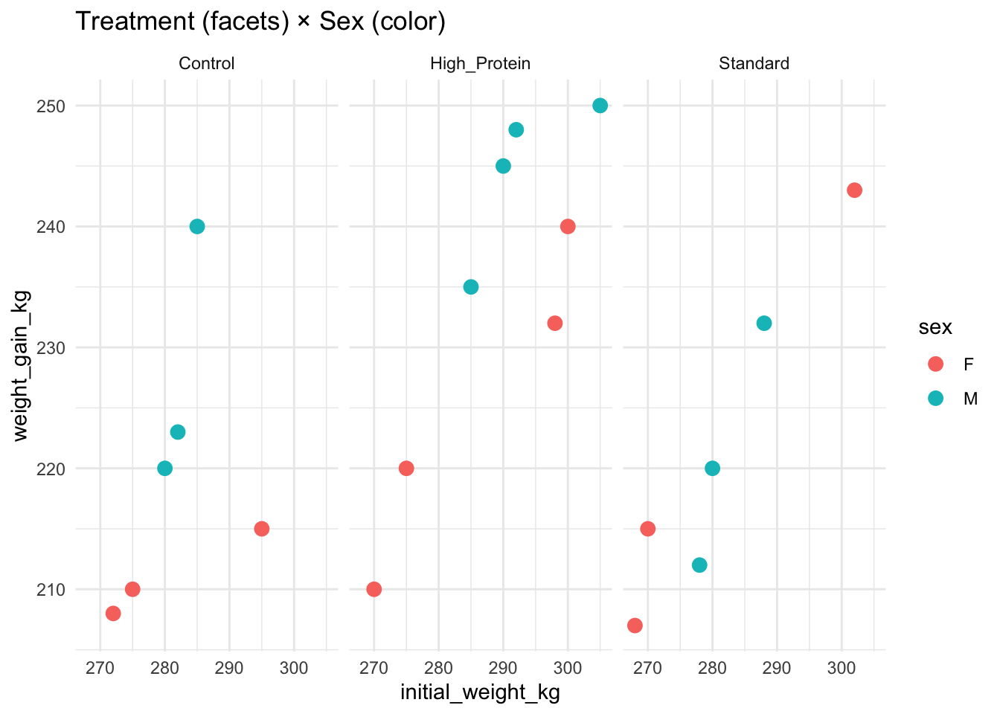
6.4 Statistical Layers
Statistical layers add computed values to your plots: trend lines, means, error bars, etc.
6.4.1 Adding Trend Lines with geom_smooth()
geom_smooth() adds a smoothed conditional mean to your plot.
6.4.1.1 Linear Regression Line
ggplot(cattle, aes(x = initial_weight_kg, y = final_weight_kg)) +
geom_point(size = 3, alpha = 0.6) +
geom_smooth(method = "lm", se = TRUE, color = "blue") +
labs(
title = "Linear Trend with Confidence Interval",
x = "Initial Weight (kg)",
y = "Final Weight (kg)"
)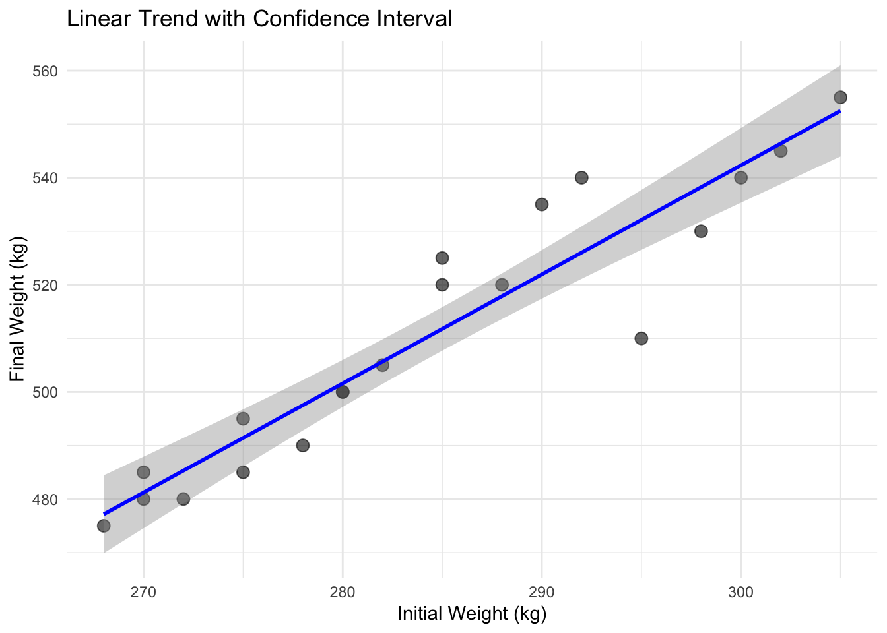
Arguments: - method = "lm" — Linear regression - se = TRUE — Show 95% confidence interval (default) - se = FALSE — Hide confidence interval
6.4.1.2 By Group
# Separate trend line for each breed
ggplot(cattle, aes(x = initial_weight_kg, y = final_weight_kg, color = breed)) +
geom_point(size = 3, alpha = 0.6) +
geom_smooth(method = "lm", se = TRUE) +
labs(title = "Linear trends by breed")
6.4.1.3 LOESS Smoothing
LOESS (Locally Estimated Scatterplot Smoothing) is better for non-linear patterns:
# Create data with non-linear relationship
set.seed(123)
growth_curve <- tibble(
age_days = rep(1:100, times = 3),
weight = 50 + age_days * 0.5 + 0.01 * age_days^2 + rnorm(300, sd = 10),
animal = rep(c("A", "B", "C"), each = 100)
)
ggplot(growth_curve, aes(x = age_days, y = weight)) +
geom_point(alpha = 0.3) +
geom_smooth(method = "loess", color = "red", se = TRUE) +
geom_smooth(method = "lm", color = "blue", linetype = "dashed", se = FALSE) +
labs(
title = "LOESS (red) vs Linear (blue)",
subtitle = "LOESS captures non-linear growth pattern"
)
6.4.1.4 GAM (Generalized Additive Model)
For very flexible smoothing:
ggplot(growth_curve, aes(x = age_days, y = weight)) +
geom_point(alpha = 0.3) +
geom_smooth(method = "gam", formula = y ~ s(x, bs = "cs"), color = "darkgreen") +
labs(title = "GAM smoothing for flexible curves")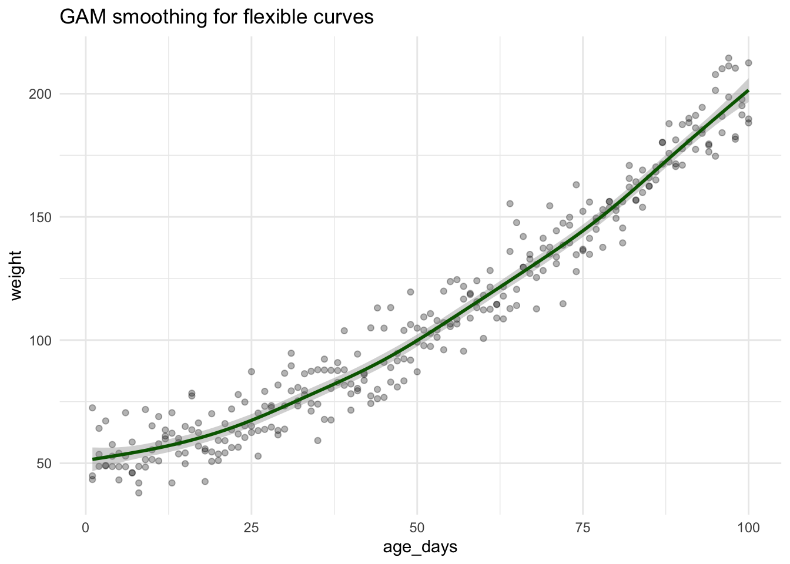
NoteMethod Options for
geom_smooth()
method = "lm"— Linear regressionmethod = "loess"— LOESS smoothing (default for < 1000 points)method = "gam"— Generalized Additive Model (requiresmgcvpackage)method = "glm"— Generalized Linear Model
6.4.2 Summary Statistics with stat_summary()
stat_summary() calculates and displays summary statistics.
6.4.2.1 Mean with Error Bars
# Mean weight gain by breed
ggplot(cattle, aes(x = breed, y = weight_gain_kg)) +
geom_jitter(width = 0.2, alpha = 0.3, size = 2) +
stat_summary(
fun = mean,
geom = "point",
size = 4,
color = "red"
) +
stat_summary(
fun.data = mean_se,
geom = "errorbar",
width = 0.2,
color = "red"
) +
labs(title = "Mean ± SE by breed")
6.4.2.2 Mean with Confidence Intervals
ggplot(cattle, aes(x = treatment, y = weight_gain_kg, color = treatment)) +
stat_summary(
fun.data = mean_cl_normal, # Mean with 95% CI
geom = "pointrange",
size = 1
) +
labs(
title = "Mean Weight Gain by Treatment",
subtitle = "Points show mean, bars show 95% CI",
y = "Weight Gain (kg)"
) +
theme(legend.position = "none")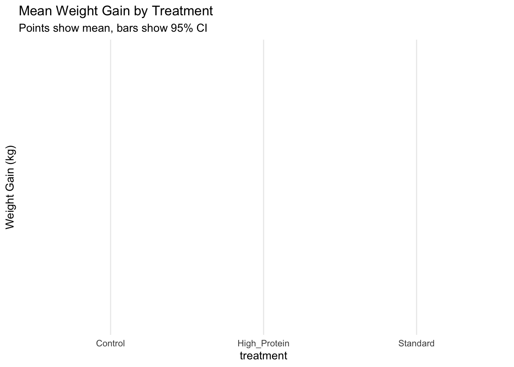
TipSummary Functions
Common functions for stat_summary(): - mean, median, min, max - mean_se — Mean ± standard error - mean_sdl — Mean ± standard deviation - mean_cl_normal — Mean ± 95% CI (assumes normality) - mean_cl_boot — Mean ± 95% CI (bootstrap)
6.4.3 Manual Error Bars
If you’ve pre-calculated summaries, use geom_errorbar():
# Calculate summaries
cattle_summary <- cattle %>%
group_by(breed, treatment) %>%
summarise(
mean_gain = mean(weight_gain_kg),
se_gain = sd(weight_gain_kg) / sqrt(n()),
.groups = "drop"
)
cattle_summary# A tibble: 9 × 4
breed treatment mean_gain se_gain
<chr> <chr> <dbl> <dbl>
1 Angus Control 224 16
2 Angus High_Protein 234. 8.63
3 Angus Standard 220. 7.22
4 Charolais Control 215 NA
5 Charolais High_Protein 241. 5.21
6 Charolais Standard 243 NA
7 Hereford Control 218. 3.93
8 Hereford High_Protein 220 NA
9 Hereford Standard 214. 1.5 # Plot with error bars
ggplot(cattle_summary, aes(x = breed, y = mean_gain, fill = treatment)) +
geom_col(position = "dodge") +
geom_errorbar(
aes(ymin = mean_gain - se_gain, ymax = mean_gain + se_gain),
position = position_dodge(width = 0.9),
width = 0.25
) +
labs(
title = "Mean Weight Gain ± SE",
y = "Mean Weight Gain (kg)"
)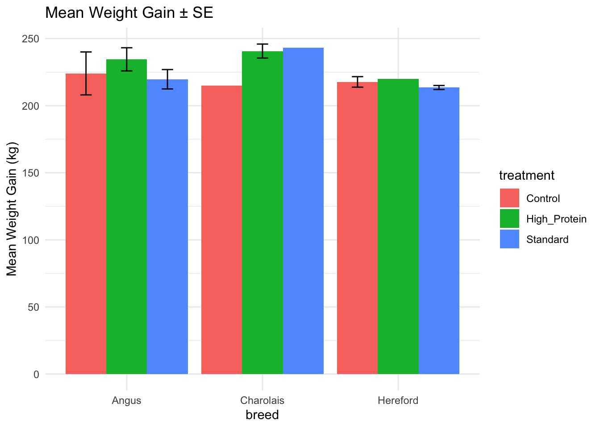
6.4.4 Other Error Bar Geoms
# geom_linerange (no caps)
p1 <- ggplot(cattle_summary, aes(x = breed, y = mean_gain, color = treatment)) +
geom_point(size = 3, position = position_dodge(width = 0.5)) +
geom_linerange(
aes(ymin = mean_gain - se_gain, ymax = mean_gain + se_gain),
position = position_dodge(width = 0.5)
) +
labs(title = "geom_linerange")
# geom_pointrange (combines point and range)
p2 <- ggplot(cattle_summary, aes(x = breed, y = mean_gain, color = treatment)) +
geom_pointrange(
aes(ymin = mean_gain - se_gain, ymax = mean_gain + se_gain),
position = position_dodge(width = 0.5)
) +
labs(title = "geom_pointrange")
p1 + p2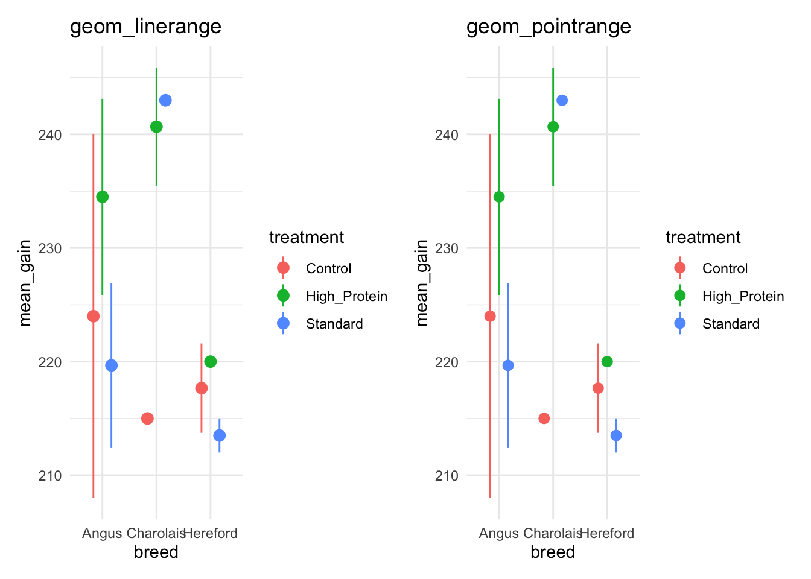
6.5 Advanced Theme Customization
In Chapter 5, you learned about built-in themes (theme_minimal(), theme_classic(), etc.). Now we’ll use theme() to customize every aspect of plot appearance.
6.5.1 The theme() Function
theme() controls non-data elements: text, backgrounds, grid lines, legends, etc.
6.5.1.1 Basic Structure
theme(
element = element_function(arguments)
)Element functions: - element_text() — Text properties - element_line() — Line properties - element_rect() — Rectangle (background) properties - element_blank() — Remove element entirely
6.5.2 Customizing Text Elements
ggplot(cattle, aes(x = breed, y = weight_gain_kg, fill = breed)) +
geom_boxplot() +
labs(title = "Weight Gain by Breed", x = "Breed", y = "Weight Gain (kg)") +
theme_minimal() +
theme(
plot.title = element_text(size = 18, face = "bold", hjust = 0.5),
axis.title = element_text(size = 14, face = "bold"),
axis.text = element_text(size = 12),
legend.title = element_text(size = 12, face = "bold"),
legend.text = element_text(size = 10)
)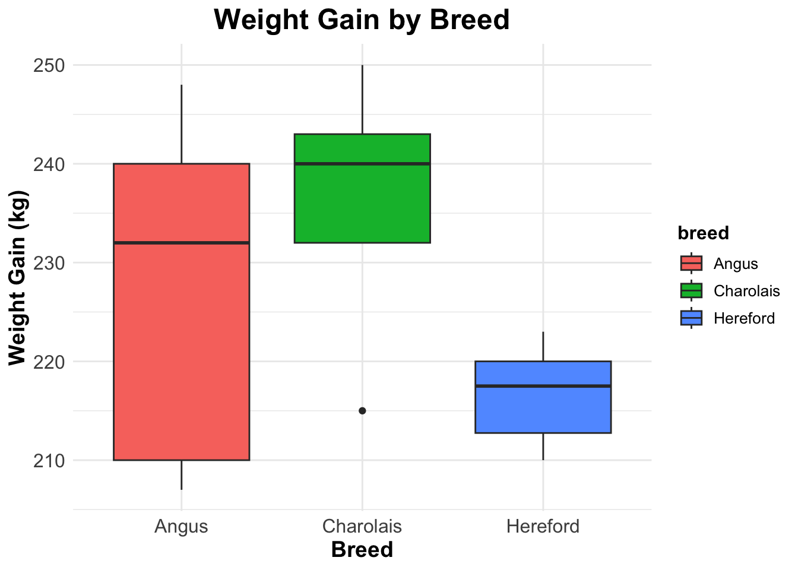
Text arguments: - size — Font size in points - face — “plain”, “bold”, “italic”, “bold.italic” - hjust — Horizontal justification (0 = left, 0.5 = center, 1 = right) - vjust — Vertical justification - color — Text color - family — Font family
6.5.3 Customizing Legends
# Legend position
p1 <- ggplot(cattle, aes(x = initial_weight_kg, y = weight_gain_kg, color = breed)) +
geom_point(size = 3) +
labs(title = "Legend on right (default)") +
theme_minimal()
p2 <- ggplot(cattle, aes(x = initial_weight_kg, y = weight_gain_kg, color = breed)) +
geom_point(size = 3) +
labs(title = "Legend on bottom") +
theme_minimal() +
theme(legend.position = "bottom")
p3 <- ggplot(cattle, aes(x = initial_weight_kg, y = weight_gain_kg, color = breed)) +
geom_point(size = 3) +
labs(title = "Legend inside plot") +
theme_minimal() +
theme(legend.position = c(0.85, 0.2)) # x, y coordinates (0-1)
p4 <- ggplot(cattle, aes(x = initial_weight_kg, y = weight_gain_kg, color = breed)) +
geom_point(size = 3) +
labs(title = "No legend") +
theme_minimal() +
theme(legend.position = "none")
(p1 + p2) / (p3 + p4)
6.5.3.1 Legend Box and Background
ggplot(cattle, aes(x = breed, y = weight_gain_kg, fill = sex)) +
geom_boxplot() +
theme_minimal() +
theme(
legend.position = c(0.9, 0.8),
legend.background = element_rect(fill = "white", color = "black", linewidth = 0.5),
legend.title = element_text(face = "bold"),
legend.key.size = unit(1, "cm")
)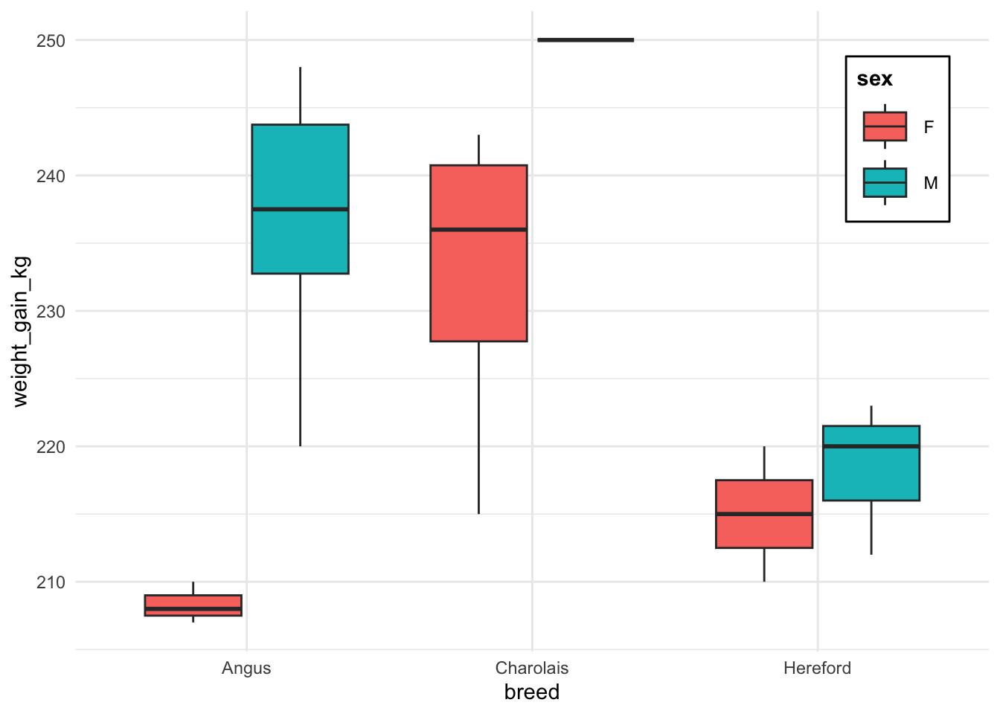
6.5.4 Panel Elements
ggplot(cattle, aes(x = breed, y = weight_gain_kg)) +
geom_boxplot(fill = "lightblue") +
theme_minimal() +
theme(
panel.background = element_rect(fill = "lightyellow"),
panel.grid.major = element_line(color = "gray70", linewidth = 0.5),
panel.grid.minor = element_line(color = "gray90", linewidth = 0.25),
panel.border = element_rect(fill = NA, color = "black", linewidth = 1)
) +
labs(title = "Custom panel appearance")
6.5.5 Plot Background and Margins
ggplot(cattle, aes(x = breed, y = weight_gain_kg, fill = breed)) +
geom_violin(alpha = 0.7) +
theme_minimal() +
theme(
plot.background = element_rect(fill = "#f0f0f0"),
plot.margin = margin(t = 20, r = 30, b = 20, l = 20, unit = "pt"),
plot.title = element_text(hjust = 0.5, size = 16, face = "bold")
) +
labs(title = "Custom plot background and margins")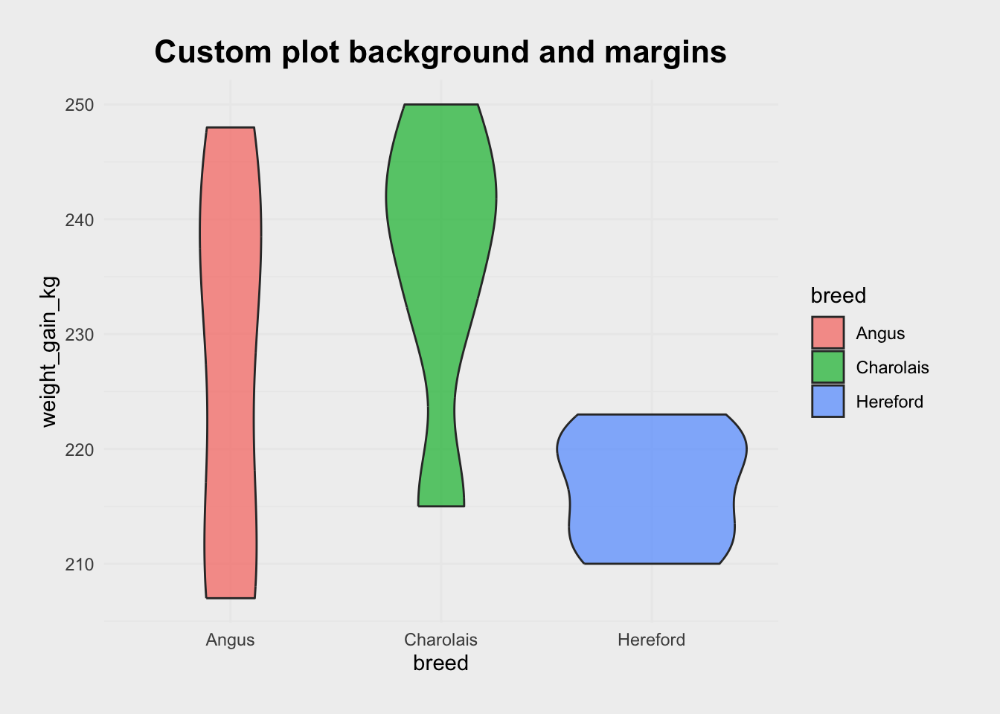
6.5.6 Axis Customization
ggplot(cattle, aes(x = initial_weight_kg, y = final_weight_kg)) +
geom_point(size = 3, alpha = 0.6) +
theme_minimal() +
theme(
axis.line = element_line(color = "black", linewidth = 1),
axis.ticks = element_line(color = "black", linewidth = 0.5),
axis.ticks.length = unit(0.25, "cm"),
axis.text.x = element_text(angle = 45, hjust = 1),
panel.grid.major = element_blank(),
panel.grid.minor = element_blank()
) +
labs(title = "Custom axis styling")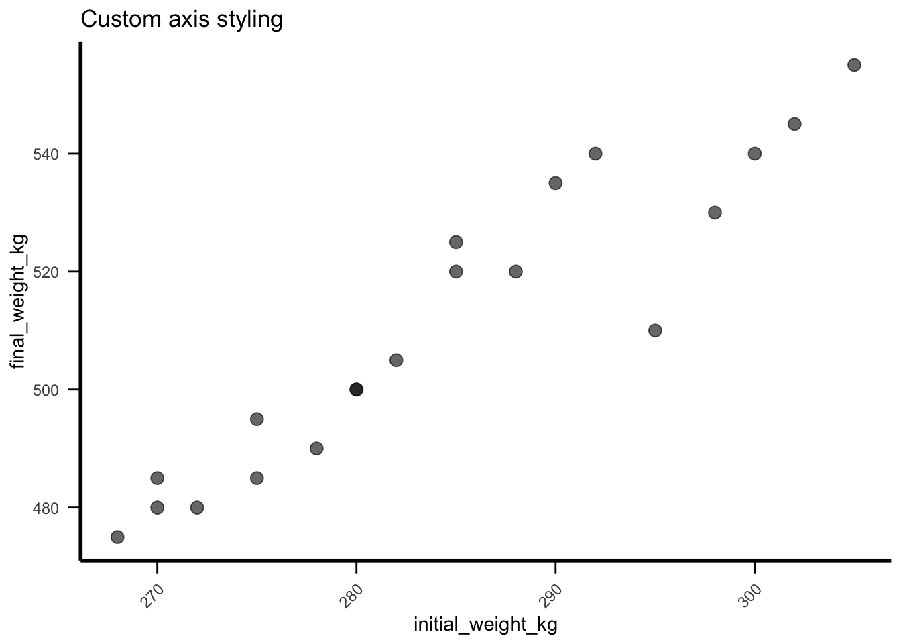
6.5.7 Creating a Custom Theme
Save your customizations as a reusable theme:
theme_publication <- function(base_size = 12) {
theme_minimal(base_size = base_size) +
theme(
# Text elements
plot.title = element_text(size = base_size + 4, face = "bold", hjust = 0.5),
plot.subtitle = element_text(size = base_size + 2, hjust = 0.5),
axis.title = element_text(size = base_size + 2, face = "bold"),
axis.text = element_text(size = base_size),
# Legend
legend.position = "bottom",
legend.title = element_text(face = "bold"),
# Panel
panel.grid.minor = element_blank(),
panel.border = element_rect(fill = NA, color = "black", linewidth = 0.5),
# Background
plot.background = element_rect(fill = "white", color = NA)
)
}
# Use custom theme
ggplot(cattle, aes(x = breed, y = weight_gain_kg, fill = treatment)) +
geom_boxplot() +
labs(
title = "Weight Gain by Breed and Treatment",
subtitle = "Using custom publication theme",
y = "Weight Gain (kg)"
) +
theme_publication()
TipSave Your Theme
Save custom themes in your R scripts or packages:
# In your setup chunk
theme_publication <- function(...) { ... }
theme_set(theme_publication()) # Set as default for all plots6.6 Advanced Color Palettes
Chapter 5 covered basic color scales. Now we’ll explore professional color palettes.
6.6.1 ColorBrewer Palettes
ColorBrewer provides carefully designed color schemes for different data types.
6.6.1.1 Qualitative Palettes (Categorical Data)
library(RColorBrewer)
# Display available ColorBrewer palettes
display.brewer.all()
# Use Set1 palette
ggplot(cattle, aes(x = initial_weight_kg, y = weight_gain_kg, color = breed)) +
geom_point(size = 4) +
scale_color_brewer(palette = "Set1") +
labs(title = "ColorBrewer Set1")
# Use Dark2 palette
ggplot(cattle, aes(x = breed, y = weight_gain_kg, fill = breed)) +
geom_violin() +
scale_fill_brewer(palette = "Dark2") +
theme(legend.position = "none") +
labs(title = "ColorBrewer Dark2")
6.6.1.2 Sequential Palettes (Ordered Data)
# Create ordered variable
cattle <- cattle %>%
mutate(weight_category = cut(final_weight_kg,
breaks = c(0, 490, 510, 600),
labels = c("Light", "Medium", "Heavy")))
ggplot(cattle, aes(x = breed, fill = weight_category)) +
geom_bar(position = "fill") +
scale_fill_brewer(palette = "Blues", direction = 1) +
labs(
title = "Weight Categories by Breed",
y = "Proportion",
fill = "Weight Category"
)
6.6.1.3 Diverging Palettes
Good for data with a meaningful midpoint:
# Calculate deviation from mean
cattle <- cattle %>%
mutate(gain_deviation = weight_gain_kg - mean(weight_gain_kg))
ggplot(cattle, aes(x = animal_id, y = 1, fill = gain_deviation)) +
geom_tile() +
scale_fill_distiller(palette = "RdBu", direction = -1) +
theme_void() +
theme(
legend.position = "bottom",
axis.text.x = element_text(angle = 90, hjust = 1)
) +
labs(
title = "Deviation from Mean Weight Gain",
fill = "Deviation (kg)"
)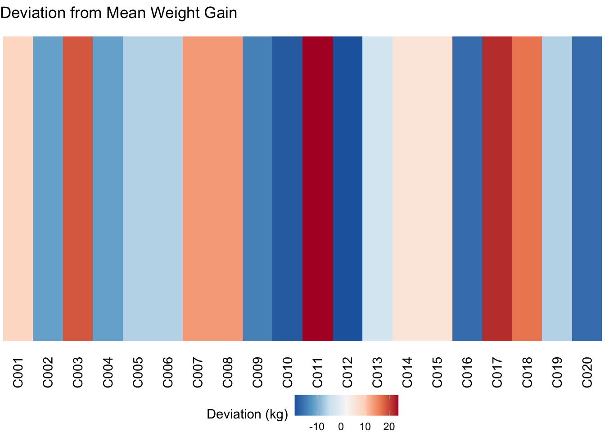
6.6.2 Viridis Palettes (Colorblind-Friendly)
Viridis palettes are: - Colorblind-friendly - Perceptually uniform - Print well in grayscale
# Discrete version
p1 <- ggplot(cattle, aes(x = initial_weight_kg, y = weight_gain_kg, color = breed)) +
geom_point(size = 4) +
scale_color_viridis_d(option = "viridis") +
labs(title = "Viridis (discrete)")
p2 <- ggplot(cattle, aes(x = initial_weight_kg, y = weight_gain_kg, color = breed)) +
geom_point(size = 4) +
scale_color_viridis_d(option = "plasma") +
labs(title = "Plasma")
p3 <- ggplot(cattle, aes(x = initial_weight_kg, y = weight_gain_kg, color = breed)) +
geom_point(size = 4) +
scale_color_viridis_d(option = "inferno") +
labs(title = "Inferno")
p4 <- ggplot(cattle, aes(x = initial_weight_kg, y = weight_gain_kg, color = breed)) +
geom_point(size = 4) +
scale_color_viridis_d(option = "magma") +
labs(title = "Magma")
(p1 + p2) / (p3 + p4)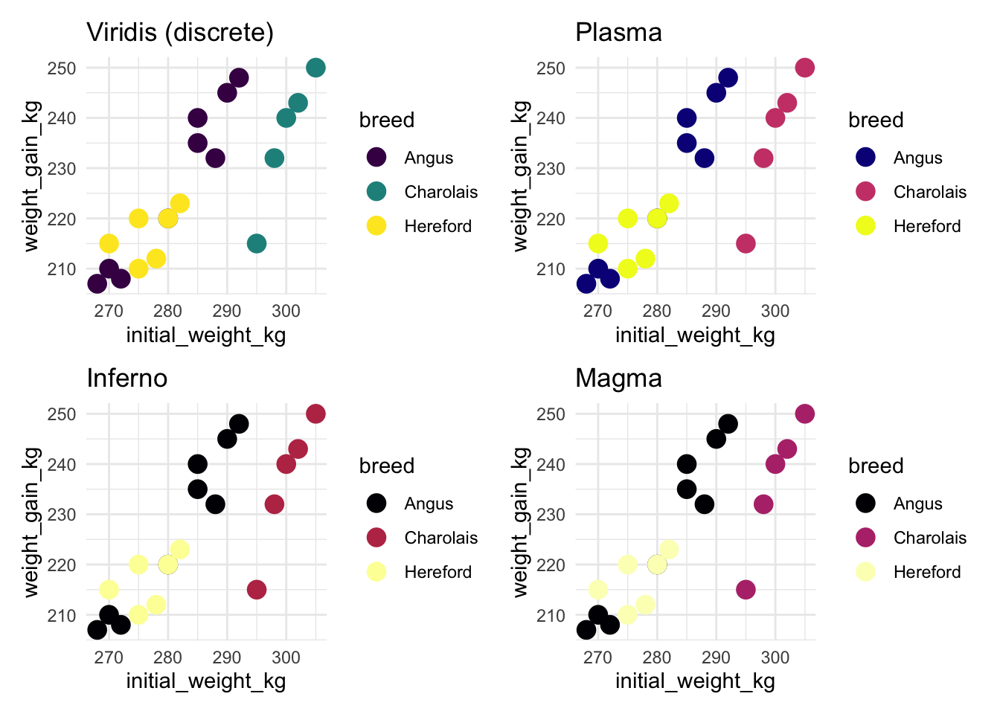
6.6.2.1 Continuous Viridis
ggplot(cattle, aes(x = breed, y = sex, fill = weight_gain_kg)) +
geom_tile(color = "white", linewidth = 1) +
scale_fill_viridis_c(option = "plasma") +
labs(
title = "Weight Gain Heatmap",
fill = "Weight Gain (kg)"
) +
theme_minimal()
ImportantAlways Consider Colorblindness
Approximately 8% of men and 0.5% of women have some form of color blindness. Use: - Viridis palettes - ColorBrewer palettes designed for colorblindness - Sufficient contrast - Shape or pattern in addition to color when possible
6.6.3 Manual Color Specification
For precise control, specify colors manually:
# Define custom colors
breed_colors <- c(
"Angus" = "#8B4513", # Brown
"Hereford" = "#CD853F", # Tan
"Charolais" = "#F5DEB3" # Wheat
)
ggplot(cattle, aes(x = initial_weight_kg, y = weight_gain_kg, color = breed)) +
geom_point(size = 4) +
scale_color_manual(values = breed_colors) +
labs(title = "Custom brand colors")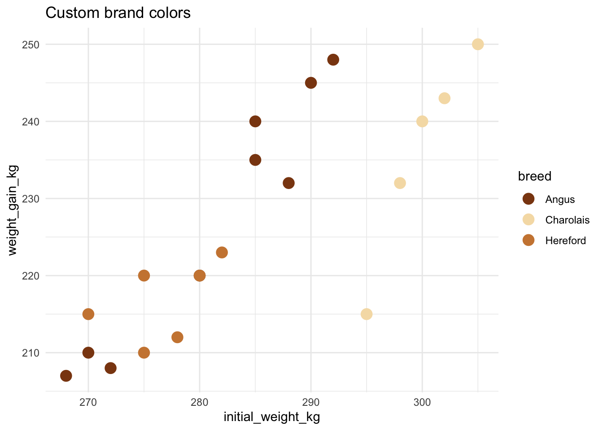
6.7 Text and Annotations
Adding text and annotations helps highlight important features in your plots.
6.7.1 geom_text() and geom_label()
Add text for each data point:
# Select a few animals to label
labeled_cattle <- cattle %>%
filter(animal_id %in% c("C001", "C011", "C020"))
ggplot(cattle, aes(x = initial_weight_kg, y = weight_gain_kg)) +
geom_point(size = 3, alpha = 0.5) +
geom_point(data = labeled_cattle, size = 4, color = "red") +
geom_text(data = labeled_cattle, aes(label = animal_id),
nudge_x = 5, nudge_y = 5, size = 4) +
labs(title = "geom_text() - labels without boxes")
# With boxes (geom_label)
ggplot(cattle, aes(x = initial_weight_kg, y = weight_gain_kg)) +
geom_point(size = 3, alpha = 0.5) +
geom_point(data = labeled_cattle, size = 4, color = "red") +
geom_label(data = labeled_cattle, aes(label = animal_id),
nudge_x = 5, nudge_y = 5, size = 4) +
labs(title = "geom_label() - labels with boxes")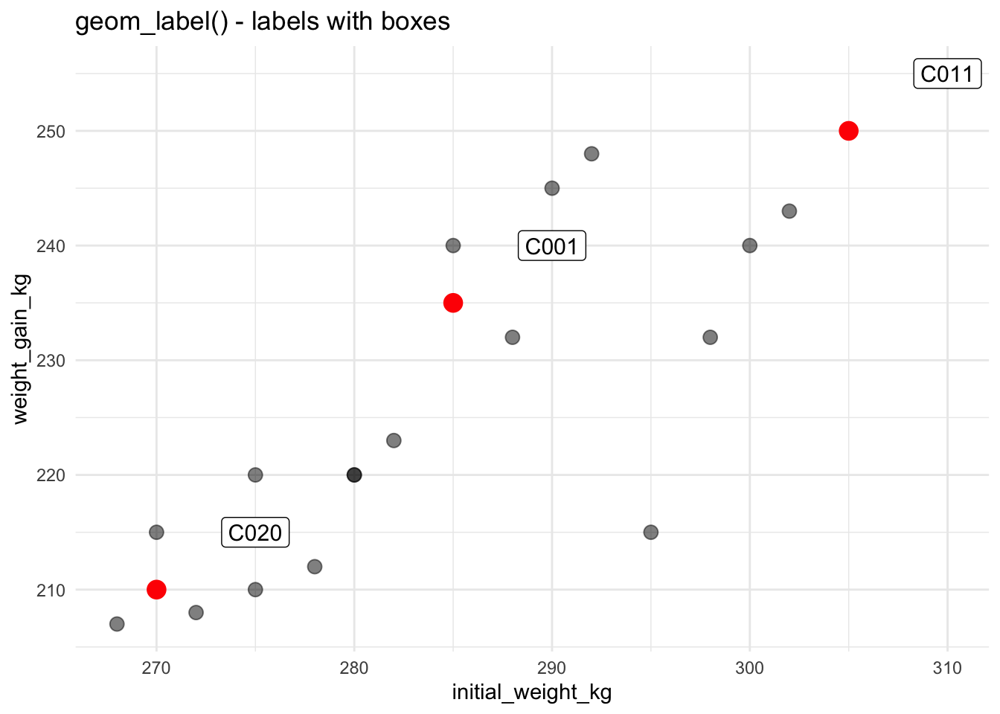
6.7.2 Non-Overlapping Labels with ggrepel
ggrepel automatically adjusts label positions to avoid overlaps:
# First install: install.packages("ggrepel")
library(ggrepel)
# Label all cattle (geom_text would overlap badly)
ggplot(cattle, aes(x = initial_weight_kg, y = weight_gain_kg, label = animal_id)) +
geom_point(size = 3, alpha = 0.6) +
geom_text_repel(size = 3, max.overlaps = 10) +
labs(title = "geom_text_repel() prevents overlaps")
NoteInstalling ggrepel
The ggrepel package is optional but very useful. Install it with:
install.packages("ggrepel")6.7.3 annotate() for Custom Annotations
Add text, shapes, or lines that aren’t tied to data:
ggplot(cattle, aes(x = initial_weight_kg, y = weight_gain_kg, color = breed)) +
geom_point(size = 3) +
# Add text annotation
annotate("text", x = 305, y = 270, label = "High performers",
size = 5, fontface = "bold") +
# Add arrow
annotate("segment", x = 303, xend = 298, y = 268, yend = 260,
arrow = arrow(length = unit(0.3, "cm")), linewidth = 1) +
# Add rectangle
annotate("rect", xmin = 295, xmax = 308, ymin = 255, ymax = 275,
alpha = 0.2, fill = "yellow") +
labs(title = "Using annotate() for custom elements")
6.7.4 Highlighting Regions
# Highlight a target zone
ggplot(cattle, aes(x = initial_weight_kg, y = final_weight_kg)) +
# Target zone (add first so it's behind points)
annotate("rect", xmin = 280, xmax = 295, ymin = 510, ymax = 540,
alpha = 0.2, fill = "green") +
annotate("text", x = 287.5, y = 545, label = "Target Range",
fontface = "bold", size = 4) +
# Data points
geom_point(aes(color = breed), size = 3) +
labs(
title = "Target Weight Range",
x = "Initial Weight (kg)",
y = "Final Weight (kg)"
)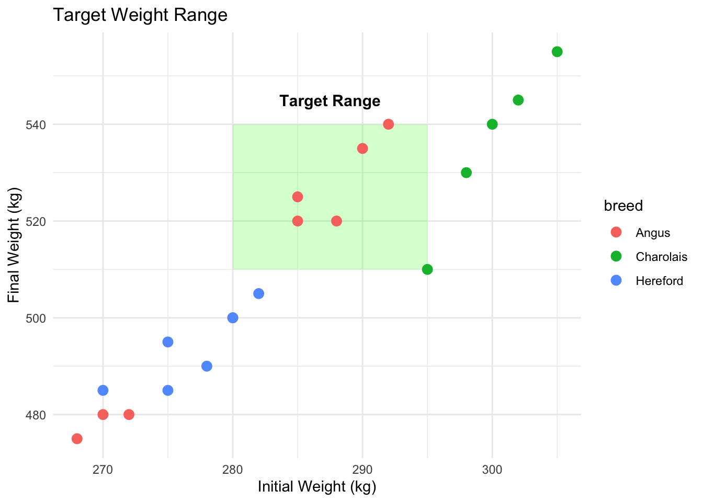
6.8 Combining Plots
Creating multi-panel figures is essential for publications. We’ll use two packages: patchwork and cowplot.
6.8.1 The patchwork Package
patchwork makes combining plots incredibly easy with intuitive operators.
6.8.1.1 Basic Operators
# Create individual plots
p1 <- ggplot(cattle, aes(x = breed, fill = breed)) +
geom_bar() +
theme_minimal() +
theme(legend.position = "none") +
labs(title = "Count by Breed", y = "Count")
p2 <- ggplot(cattle, aes(x = breed, y = weight_gain_kg, fill = breed)) +
geom_boxplot() +
theme_minimal() +
theme(legend.position = "none") +
labs(title = "Weight Gain by Breed", y = "Weight Gain (kg)")
p3 <- ggplot(cattle, aes(x = initial_weight_kg, y = weight_gain_kg, color = breed)) +
geom_point(size = 3) +
theme_minimal() +
labs(title = "Initial Weight vs Gain")
# Side by side with +
p1 + p2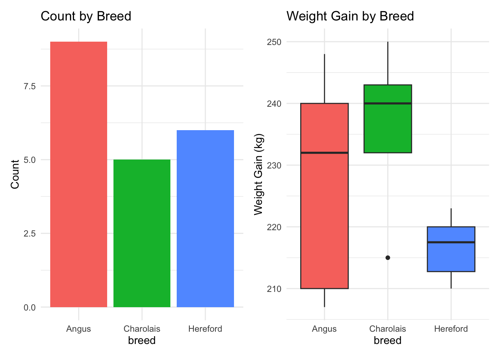
# Stack vertically with /
p1 / p2
# Complex layouts
(p1 + p2) / p3
6.8.1.2 More Complex Layouts
p4 <- ggplot(cattle, aes(x = treatment, fill = treatment)) +
geom_bar() +
theme_minimal() +
theme(legend.position = "none") +
labs(title = "Treatment Distribution")
# | for side-by-side (same as +)
p1 | p2 | p4
# Nested layouts
(p1 | p2) / (p3 | p4)
# One plot taking more space
p1 + p2 + p3 + plot_layout(widths = c(2, 1, 1))
6.8.1.3 Collecting Legends
# All plots have their own legends (cluttered)
p1_legend <- p1 + theme(legend.position = "right")
p2_legend <- p2 + theme(legend.position = "right")
p3_legend <- p3 + theme(legend.position = "right")
(p1_legend + p2_legend + p3_legend)
# Collect legends into one
(p1_legend + p2_legend + p3_legend) +
plot_layout(guides = "collect") &
theme(legend.position = "bottom")
6.8.1.4 Adding Plot Labels
# Add A, B, C labels
(p1 + p2) / p3 +
plot_annotation(
tag_levels = "A",
title = "Cattle Weight Analysis",
subtitle = "Three perspectives on weight gain data",
caption = "Data from 20 cattle across 3 breeds"
)
6.8.1.5 Controlling Dimensions
# Control relative widths and heights
(p1 + p2) / p3 +
plot_layout(heights = c(1, 2)) # Bottom plot twice as tall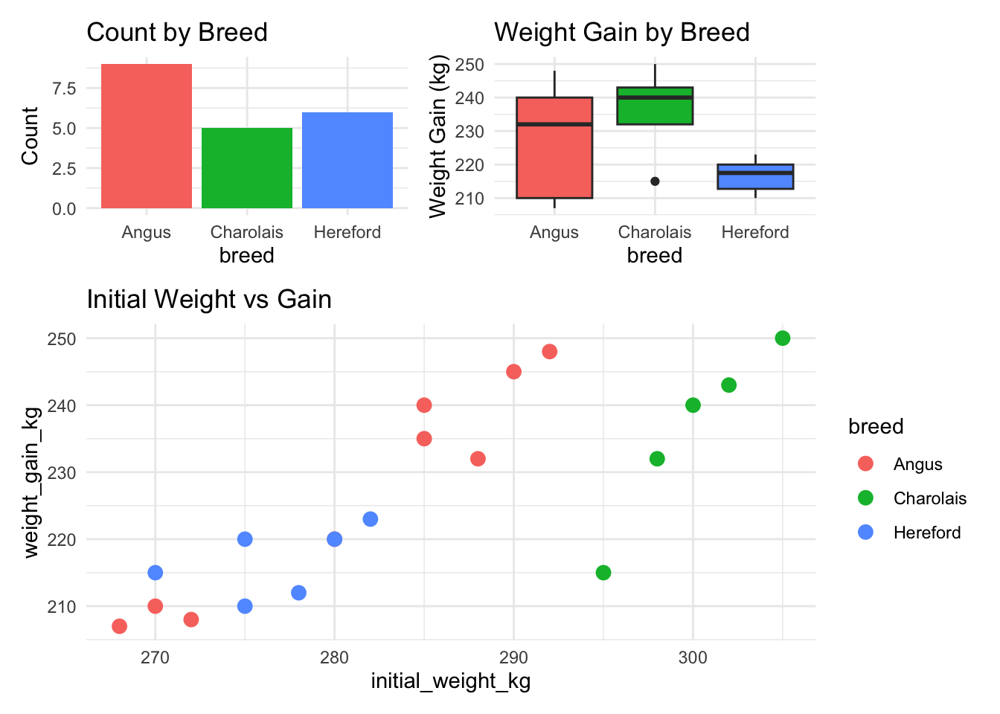
p1 + p2 + p3 +
plot_layout(widths = c(2, 1, 1)) # First plot twice as wide
6.8.2 The cowplot Package
cowplot provides more control over plot alignment and layouts.
6.8.2.1 Basic plot_grid()
library(cowplot)
# Simple grid
plot_grid(p1, p2, p3, ncol = 2, labels = c("A", "B", "C"))
# Adjust relative sizes
plot_grid(
p1, p2, p3,
ncol = 2,
rel_widths = c(1, 1.5),
rel_heights = c(1, 1.2),
labels = "AUTO"
)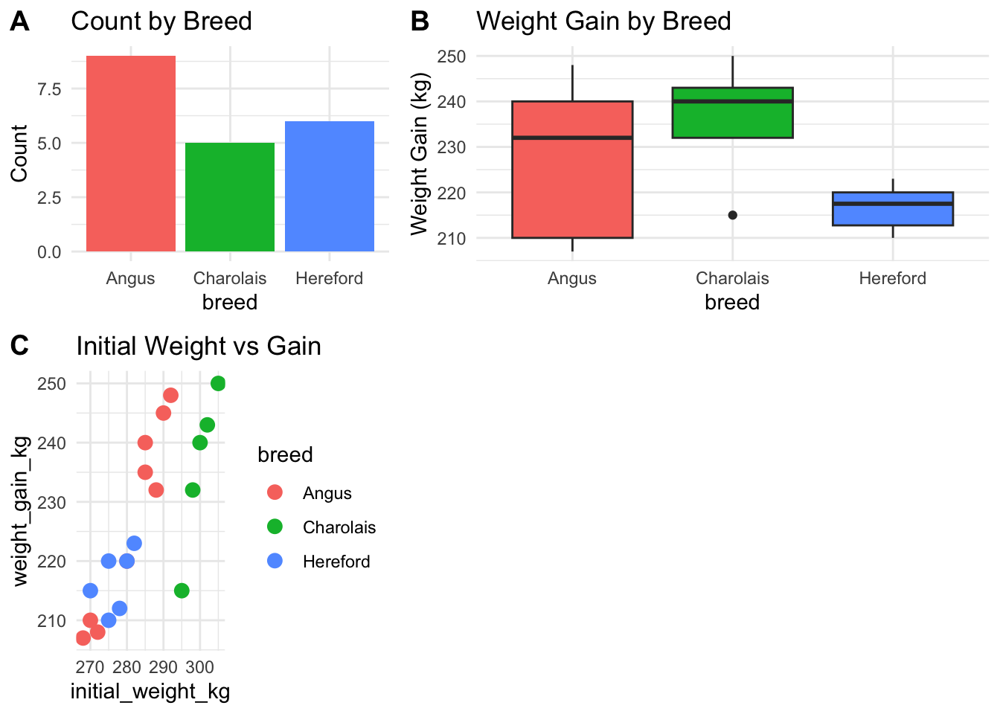
6.8.2.2 Aligning Plots
# Align axes
plot_grid(p1, p2, ncol = 1, align = "v")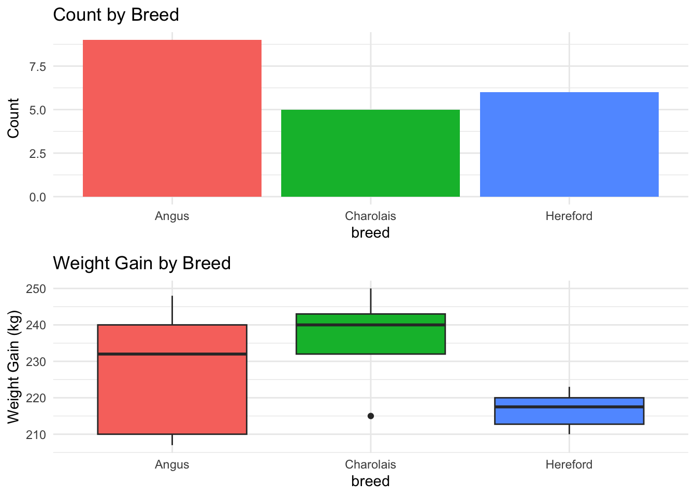
# Align both axes
plot_grid(p1, p2, p3, ncol = 3, align = "hv")
6.8.2.3 Complex Layouts with Nesting
# Create nested layout
top_row <- plot_grid(p1, p2, ncol = 2, labels = c("A", "B"))
bottom_row <- plot_grid(p3, p4, ncol = 2, labels = c("C", "D"))
plot_grid(top_row, bottom_row, ncol = 1, rel_heights = c(1, 1.2))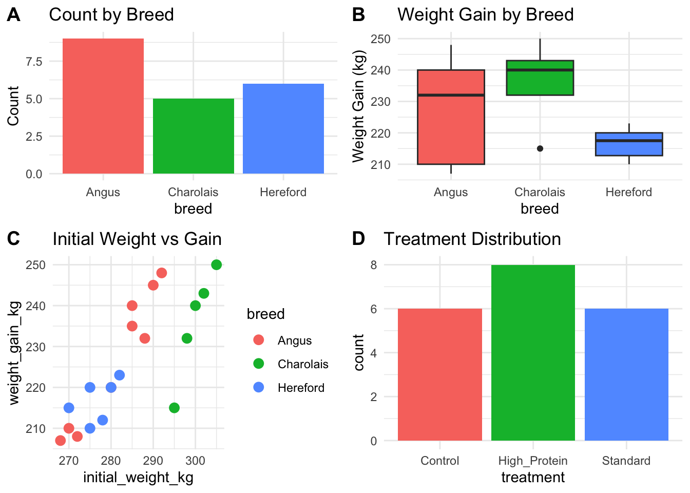
6.8.3 patchwork vs cowplot
| Feature | patchwork |
cowplot |
|---|---|---|
| Syntax | Very intuitive (+, /, \|) |
Function-based (plot_grid()) |
| Quick layouts | ⭐⭐⭐⭐⭐ | ⭐⭐⭐ |
| Complex control | ⭐⭐⭐⭐ | ⭐⭐⭐⭐⭐ |
| Learning curve | Easy | Moderate |
| Legend handling | Excellent | Good |
TipWhich Package to Use?
patchwork: For most cases — intuitive and quickcowplot: When you need precise control over alignment and spacing- Both: They work well together! Use patchwork for layout, cowplot for fine-tuning
6.9 Publication-Ready Workflow
Creating journal-quality figures requires attention to detail. Here’s a complete workflow.
6.9.1 Checklist for Publication Figures
✅ Data Quality - [ ] Data cleaned and verified - [ ] Outliers investigated - [ ] Sample sizes appropriate
✅ Plot Choice - [ ] Plot type appropriate for data - [ ] Multiple views if needed (e.g., raw data + summary)
✅ Visual Elements - [ ] Axis labels clear and include units - [ ] Title informative (or caption in figure legend) - [ ] Legend easy to understand - [ ] Colors colorblind-friendly - [ ] Text readable at publication size
✅ Statistics - [ ] Error bars clearly defined (SE, SD, CI?) - [ ] Sample sizes shown or stated - [ ] Statistical tests results shown if relevant
✅ Style - [ ] Font size: 8-12pt in final figure - [ ] Line widths: 0.5-1pt - [ ] Resolution: 300+ DPI - [ ] Format: PDF (vector) or high-res PNG
6.9.2 Complete Example: Publication Figure
# Step 1: Prepare data with summary statistics
cattle_stats <- cattle %>%
group_by(breed, treatment) %>%
summarise(
n = n(),
mean_gain = mean(weight_gain_kg),
se_gain = sd(weight_gain_kg) / sqrt(n()),
.groups = "drop"
)
# Step 2: Create individual panels
# Panel A: Raw data with trend lines
panel_a <- ggplot(cattle, aes(x = initial_weight_kg, y = weight_gain_kg, color = breed)) +
geom_point(size = 2, alpha = 0.6) +
geom_smooth(method = "lm", se = FALSE, linewidth = 1) +
scale_color_viridis_d(option = "plasma") +
labs(
title = "Individual data with linear trends",
x = "Initial Weight (kg)",
y = "Weight Gain (kg)"
) +
theme_minimal(base_size = 10) +
theme(
plot.title = element_text(size = 10, face = "bold"),
legend.position = c(0.85, 0.2),
panel.border = element_rect(fill = NA, color = "black", linewidth = 0.5)
)
# Panel B: Summary by breed
panel_b <- ggplot(cattle, aes(x = breed, y = weight_gain_kg, fill = breed)) +
geom_boxplot(alpha = 0.7, outlier.shape = NA) +
geom_jitter(width = 0.2, size = 1.5, alpha = 0.4) +
scale_fill_viridis_d(option = "plasma") +
stat_summary(fun = mean, geom = "point", shape = 23, size = 3, fill = "red") +
labs(
title = "Distribution by breed",
x = "Breed",
y = "Weight Gain (kg)"
) +
theme_minimal(base_size = 10) +
theme(
plot.title = element_text(size = 10, face = "bold"),
legend.position = "none",
panel.border = element_rect(fill = NA, color = "black", linewidth = 0.5)
)
# Panel C: Interaction between breed and treatment
panel_c <- ggplot(cattle_stats, aes(x = breed, y = mean_gain, fill = treatment)) +
geom_col(position = "dodge", alpha = 0.8) +
geom_errorbar(
aes(ymin = mean_gain - se_gain, ymax = mean_gain + se_gain),
position = position_dodge(width = 0.9),
width = 0.25
) +
geom_text(
aes(label = paste0("n=", n)),
position = position_dodge(width = 0.9),
vjust = -0.5,
size = 2.5
) +
scale_fill_brewer(palette = "Set2") +
labs(
title = "Breed × Treatment interaction",
x = "Breed",
y = "Mean Weight Gain ± SE (kg)",
fill = "Treatment"
) +
theme_minimal(base_size = 10) +
theme(
plot.title = element_text(size = 10, face = "bold"),
legend.position = "bottom",
legend.title = element_text(size = 9),
legend.text = element_text(size = 8),
panel.border = element_rect(fill = NA, color = "black", linewidth = 0.5)
)
# Step 3: Combine with patchwork
final_figure <- (panel_a + panel_b) / panel_c +
plot_annotation(
tag_levels = "A",
title = "Weight gain response to diet treatments in three cattle breeds",
caption = "Figure 1. (A) Initial weight vs weight gain showing breed-specific responses. (B) Distribution of weight gain by breed; red diamonds show means. (C) Treatment effects within each breed; error bars show ±SE, sample sizes indicated above bars.",
theme = theme(
plot.title = element_text(size = 12, face = "bold", hjust = 0),
plot.caption = element_text(size = 8, hjust = 0)
)
)
final_figure
# Step 4: Save for publication
# ggsave("figures/figure1_cattle_weight_gain.pdf",
# plot = final_figure,
# width = 7, height = 7, dpi = 300)6.9.3 Journal-Specific Requirements
Different journals have different requirements. Common specifications:
Nature/Science: - Size: 89 mm (single column) or 183 mm (double column) - Format: PDF or EPS (vector) - Font: Arial, 5-7 pt minimum - Resolution: 300+ DPI
PLOS: - Size: Up to 190 mm width - Format: TIFF, EPS, or PDF - Font: 8-12 pt - Resolution: 300-600 DPI
Journal of Animal Science: - Size: 3.5” (single) or 7” (double column) - Format: TIFF, EPS, PDF - Font: Times or Arial, 8 pt minimum - Resolution: 300 DPI minimum
ImportantAlways Check Journal Guidelines
Before creating final figures: 1. Check journal’s “Instructions for Authors” 2. Look at recently published figures in that journal 3. Verify file format, dimensions, and resolution 4. Test that fonts are readable at final size
6.10 Summary
This chapter covered advanced ggplot2 techniques for creating publication-quality figures:
6.10.1 Key Concepts
- Faceting allows you to create small multiples for comparing groups:
facet_wrap()for one variablefacet_grid()for two variables (rows × columns)- Control scales with
scales = "free","fixed", etc.
- Statistical layers add computed values:
geom_smooth()for trend linesstat_summary()for custom summariesgeom_errorbar(),geom_pointrange()for uncertainty
- Theme customization with
theme():- Text elements:
element_text() - Lines:
element_line() - Rectangles:
element_rect() - Remove:
element_blank()
- Text elements:
- Color palettes:
- ColorBrewer for qualitative, sequential, and diverging data
- Viridis for colorblind-friendly, perceptually uniform colors
- Manual specification for precise control
- Text and annotations:
geom_text()andgeom_label()for labeling data pointsgeom_text_repel()to avoid overlapsannotate()for custom text, shapes, and arrows
- Combining plots:
patchwork: Intuitive operators (+,/,|)cowplot: Precise control withplot_grid()- Collect legends, add labels, control dimensions
- Publication workflow:
- Check journal requirements early
- Use appropriate dimensions and resolution
- Ensure text is readable at final size
- Save as PDF (vector) when possible
6.11 Week 6 Homework: Replicating a Journal Figure
6.11.1 Assignment Overview
Your task is to replicate a multi-panel figure from a published paper using advanced ggplot2 techniques. This will test your ability to combine everything you’ve learned in Chapters 5 and 6.
6.11.2 Part 1: Select a Figure (0 points, but required)
Find a multi-panel figure (2-4 panels) from a published paper in animal science, agriculture, or related field. The figure should include: - At least 2 different plot types - Multiple groups or categories - Clear data patterns to replicate
Submit: PDF of the original figure with citation
6.11.3 Part 2: Generate Similar Data (10 points)
Create simulated data that will produce similar patterns to the published figure. Your data should: - Have similar sample sizes - Show similar trends or patterns - Include appropriate grouping variables
Submit: R code creating your dataset and showing head() and summary()
6.11.4 Part 3: Replicate Panels (50 points)
Create each panel of the figure using ggplot2. Requirements: - Panel types: Match the original plot types (scatter, bar, box, etc.) - Faceting: Use if present in original - Statistical layers: Include trend lines, error bars, or summaries as shown - Colors: Use colorblind-friendly palettes - Labels: Clear axis labels with units
Submit: Code creating each individual panel
6.11.5 Part 4: Combine Panels (20 points)
Combine your panels into a single multi-panel figure using patchwork or cowplot. Requirements: - Layout matches original figure structure - Panel labels (A, B, C, etc.) - Shared or collected legends - Overall title or caption
Submit: Code combining panels and the final combined figure
6.11.6 Part 5: Polish for Publication (15 points)
Apply final touches: - Custom theme appropriate for publication - Consistent font sizes and styling across panels - Professional-looking overall appearance - Proper spacing and alignment
Submit: Final polished figure saved as PDF (300 DPI, 7” width)
6.11.7 Part 6: Reflection (5 points)
Write 200-300 words addressing: - What was most challenging about replicating the figure? - What design choices did you make differently from the original? - What did you learn about creating publication-quality figures?
6.11.8 Example Workflow
# Part 2: Generate data
set.seed(42)
my_data <- tibble(
group = rep(c("A", "B", "C"), each = 30),
value1 = rnorm(90, mean = c(50, 55, 60), sd = 5),
value2 = value1 * 1.2 + rnorm(90, sd = 3)
)
# Part 3: Create panels
panel_a <- ggplot(my_data, aes(x = value1, y = value2, color = group)) +
geom_point() +
geom_smooth(method = "lm") +
# ... more customization
panel_b <- ggplot(my_data, aes(x = group, y = value1, fill = group)) +
geom_boxplot() +
# ... more customization
# Part 4: Combine
library(patchwork)
final_fig <- panel_a + panel_b +
plot_annotation(tag_levels = "A") +
plot_layout(guides = "collect") &
theme(legend.position = "bottom")
# Part 5: Save
ggsave("final_figure.pdf", final_fig, width = 7, height = 5, dpi = 300)6.11.9 Recommended YAML
---
title: "Week 6 Homework: Replicating a Journal Figure"
author: "Your Name"
date: today
format:
html:
toc: true
toc-depth: 2
code-fold: false
theme: cosmo
embed-resources: true
execute:
warning: false
message: false
---6.11.10 Grading Rubric
- Part 2: Data Generation (10%)
- Data structure appropriate (5%)
- Similar patterns to original (5%)
- Part 3: Individual Panels (50%)
- Correct plot types (15%)
- Statistical layers correct (10%)
- Colors and themes (10%)
- Labels and clarity (10%)
- Overall appearance (5%)
- Part 4: Combining Panels (20%)
- Layout matches original (8%)
- Panel labels correct (6%)
- Legends handled well (6%)
- Part 5: Publication Polish (15%)
- Professional appearance (8%)
- Consistent styling (4%)
- Appropriate dimensions (3%)
- Part 6: Reflection (5%)
- Thoughtful analysis of challenges and decisions
6.11.11 Bonus (+10 points)
Add one panel that wasn’t in the original figure but provides additional insight into the data. Justify why you added it and what it shows.
6.12 Additional Resources
6.12.1 Required Reading
- R for Data Science (2e) - Chapter 11: Communication
- ggplot2 book (3e) - Chapters 7-10 (Layers, Annotations, Networks)
- patchwork documentation
6.12.2 Optional Reading
- Wilke, C.O. (2019). Fundamentals of Data Visualization. O’Reilly. Free online
- Tufte, E.R. (2001). The Visual Display of Quantitative Information (2nd ed.). Graphics Press.
- Colorblind-Friendly Palettes by Paul Tol
6.12.3 Videos
- “The Grammar of Graphics” by Hadley Wickham (RStudio Conference)
- “ggplot2 Workshop Part 2: Customization” by Thomas Lin Pedersen
- “Making Beautiful Figures in R” by Rafael Irizarry
6.12.4 Cheat Sheets
6.12.5 Color Resources
- ColorBrewer — Test color schemes
- Coolors — Generate palettes
- Coblis — Simulate colorblindness
- Viz Palette — Test palette accessibility
6.12.6 Galleries and Examples
6.12.7 Packages Worth Exploring
ggpubr— Publication-ready plotsggthemes— Additional themesgganimate— Animated plotsplotly— Interactive plotsggridges— Ridgeline plots
6.12.8 Useful Websites
- ggplot2 Tidyverse Page
- Stack Overflow: ggplot2 tag
- RStudio Community
- ggplot2 GitHub Issues — Report bugs or request features
Next Chapter: Data Reshaping, Joining, and Iteration